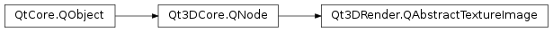

Qt3DRender.QAbstractTextureImage¶
Inherited by: Qt3DRender.QPaintedTextureImage, Qt3DRender.QTextureImage
Synopsis¶
Functions¶
- def
face() - def
layer() - def
mipLevel() - def
notifyDataGeneratorChanged()
Virtual functions¶
- def
dataGenerator()
Slots¶
- def
setFace(face) - def
setLayer(layer) - def
setMipLevel(level)
Signals¶
- def
faceChanged(face) - def
layerChanged(layer) - def
mipLevelChanged(mipLevel)
Detailed Description¶
Encapsulates the necessary information to create an OpenGL texture image.
QAbstractTextureImageshould be used as the means of providing image data to aQAbstractTexture. It contains the necessary information: mipmap level, layer, cube face load at the proper place data into an OpenGL texture.The actual data is provided through a
QTextureImageDataGeneratorthat will be executed by Aspect jobs in the backend.QAbstractTextureImageshould be subclassed to provide a functor and eventual additional properties needed by the functor to load actual data.Note
:
QAbstractTextureImageshould never be shared. Expect crashes, undefined behavior at best if this rule is not respected.
-
PySide2.Qt3DRender.Qt3DRender.QAbstractTextureImage.dataGenerator()¶ Return type: PySide2.QtQuick.QSharedPointerImplement this method to return the
QTextureImageDataGeneratorPtr, which will provide the data for the texture image.
-
PySide2.Qt3DRender.Qt3DRender.QAbstractTextureImage.face()¶ Return type: PySide2.Qt3DRender.Qt3DRender::QAbstractTexture.CubeMapFaceSee also
PySide2.Qt3DRender.Qt3DRender::QAbstractTextureImage.setFace()
-
PySide2.Qt3DRender.Qt3DRender.QAbstractTextureImage.faceChanged(face)¶ Parameters: face – PySide2.Qt3DRender.Qt3DRender::QAbstractTexture.CubeMapFace
-
PySide2.Qt3DRender.Qt3DRender.QAbstractTextureImage.layer()¶ Return type: PySide2.QtCore.intSee also
PySide2.Qt3DRender.Qt3DRender::QAbstractTextureImage.setLayer()
-
PySide2.Qt3DRender.Qt3DRender.QAbstractTextureImage.layerChanged(layer)¶ Parameters: layer – PySide2.QtCore.int
-
PySide2.Qt3DRender.Qt3DRender.QAbstractTextureImage.mipLevel()¶ Return type: PySide2.QtCore.intSee also
PySide2.Qt3DRender.Qt3DRender::QAbstractTextureImage.setMipLevel()
-
PySide2.Qt3DRender.Qt3DRender.QAbstractTextureImage.mipLevelChanged(mipLevel)¶ Parameters: mipLevel – PySide2.QtCore.int
-
PySide2.Qt3DRender.Qt3DRender.QAbstractTextureImage.notifyDataGeneratorChanged()¶ Triggers an update of the data generator that is sent to the backend.
-
PySide2.Qt3DRender.Qt3DRender.QAbstractTextureImage.setFace(face)¶ Parameters: face – PySide2.Qt3DRender.Qt3DRender::QAbstractTexture.CubeMapFaceSets the texture image face to
face. faceSee also
PySide2.Qt3DRender.Qt3DRender::QAbstractTextureImage.face()
-
PySide2.Qt3DRender.Qt3DRender.QAbstractTextureImage.setLayer(layer)¶ Parameters: layer – PySide2.QtCore.intSets the layer of a texture to
layer. layerSee also
PySide2.Qt3DRender.Qt3DRender::QAbstractTextureImage.layer()
-
PySide2.Qt3DRender.Qt3DRender.QAbstractTextureImage.setMipLevel(level)¶ Parameters: level – PySide2.QtCore.intSets the mip level of a texture to
level. levelSee also
PySide2.Qt3DRender.Qt3DRender::QAbstractTextureImage.mipLevel()
© 2018 The Qt Company Ltd. Documentation contributions included herein are the copyrights of their respective owners. The documentation provided herein is licensed under the terms of the GNU Free Documentation License version 1.3 as published by the Free Software Foundation. Qt and respective logos are trademarks of The Qt Company Ltd. in Finland and/or other countries worldwide. All other trademarks are property of their respective owners.